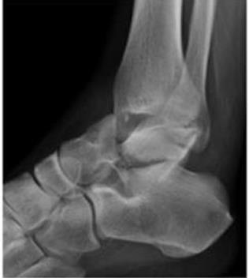

Especial de Halloween · TEOT 2025
Na radiografia, uma fratura do tálus. Qual o local e o tipo?

Hoje à noite a gente conta abóboras.
A localização da fratura e sua respectiva classificação são:
Guarde a sua letra. A regra da casa sai no próximo story.
A regra da casa
O traço que separa o colo é fratura do colo. No corpo, o traço alcança a faceta posterior. A classificação de Hawkins é das fraturas do colo.
Cada articulação em que o corpo do tálus perdeu a relação acende uma abóbora.
Volte à radiografia do primeiro story e conte quantas abóboras acendem.A resposta sai às 18h.
Resposta · gabarito B
O traço separa o colo, e o corpo perdeu as relações com a subtalar e com a pinça tibiotalar.
Local certo, tipo incompleto. Hawkins II preserva o tornozelo; aqui o corpo saiu da pinça.
Local errado. O traço é do colo, e a perda tibiotalar também não é tipo II.
Gravidade certa, local trocado. O tipo III é da fratura do colo com luxações, não do corpo.
Para a provaLocalize colo ou corpo e conte as articulações: subtalar mais tornozelo é Hawkins III.
Questões do TEOT e do TARO, comentadas assim.ortoquestoes.com.bro caminho está no nosso perfil